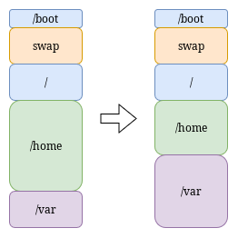
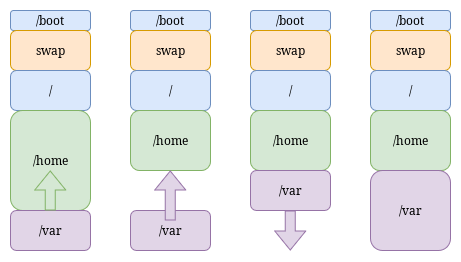
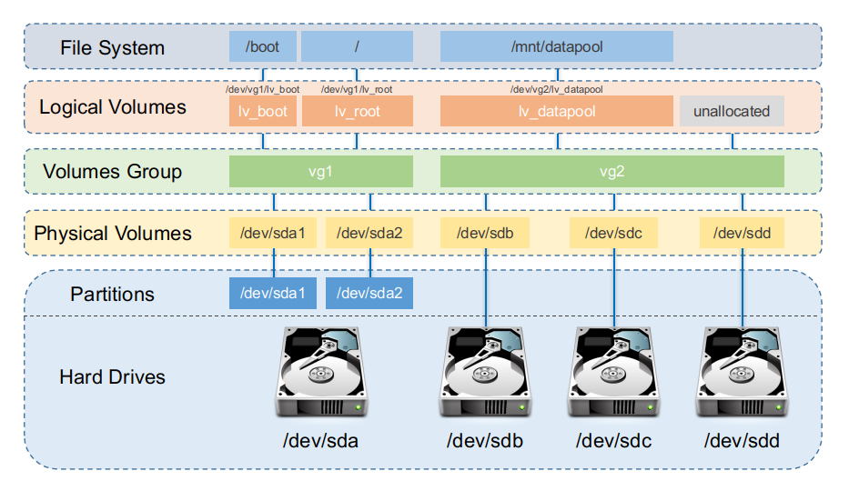
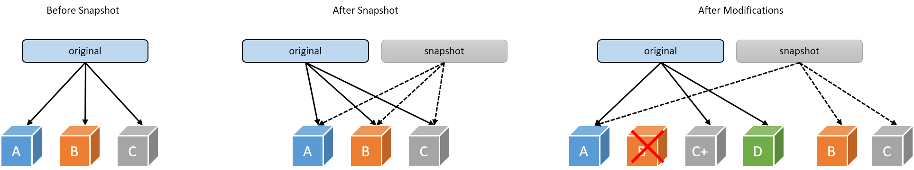
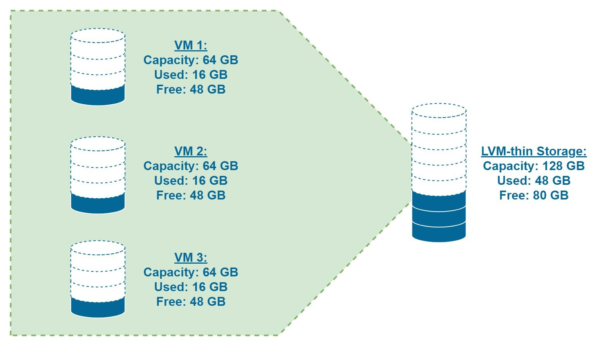
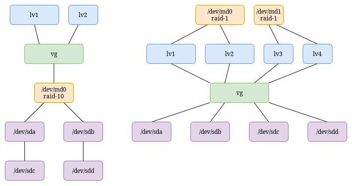

На прошлых занятиях мы научились создавать разделы и даже объединять диски в RAID. RAID
даёт нам отказоустойчивость и скорость, но у него есть одна проблема — статичность. Представьте,
что вы создали раздел /var размером 100 ГБ, а через год он заполнился на 95%
разросшейся БД postgress. Что делать? В классической схеме с разделами у вас есть несколько
неудобных вариантов:


LVM (Logical Volume Manager) решает эту проблему. Он создаёт дополнительный уровень абстракции между физическими дисками и файловыми системами. В этом мире нет жёстких разделов фиксированного размера — есть гибкие логические тома, которые можно расширять, сжимать и даже перемещать между физическими носителями без остановки системы.
Давайте чётко сформулируем, какие ограничения есть у обычных разделов (как в MBR/GPT):
LVM решает все эти проблемы.
LVM вводит три ключевых понятия. Запомните эту иерархию, это основа всего.

Это «кирпичик» системы. Физическим томом может быть:
/dev/sdb)./dev/sdc1). Важно:
тип раздела должен быть 8e (Linux LVM) для MBR или соответствующий
GUID для GPT./dev/md0).Когда мы помечаем устройство как PV, LVM в самом начале этого устройства записывает служебную информацию — метку (label). Она содержит уникальный идентификатор (UUID) и информацию о принадлежности к группе томов.
Это «пул» или «склад», который объединяет один или несколько физических томов. Именно здесь свободное пространство от разных дисков смешивается в единый ресурс.
Группа томов — это уровень, на котором исчезает понятие «диск С» и «диск D». Есть просто общее пространство.
Это и есть то самое «виртуальное устройство», которое мы создаём из пула (VG). Логический том ведёт себя в системе как обычный диск:
/dev/mapper/ или /dev/имяVG/имяLV.Размер логического тома можно менять динамически, пока группа томов имеет свободное место.
Представьте, что вы строите дом:
Это важная деталь реализации. Всё пространство в VG делится на блоки одинакового размера — экстенты (обычно 4 МиБ).
Давайте пройдём по основным действиям, которые вы будете выполнять на практике.
pvcreate /dev/sdb
/dev/sdcsdb1, sdc1
с типом 8e): pvcreate /dev/sdb1 /dev/sdc1pvs или
pvdisplayvgcreate vg_data /dev/sdb1 /dev/sdc1vg_data — имя группы. Вы можете назвать её как угодно.vgs или
vgdisplaylvcreate -n lv_home -L 10G vg_data — создаст том
размером 10 ГБ с именем lv_home.lvcreate -n lv_var -l 100%FREE vg_data — создаст
том, заняв всё оставшееся свободное место.lvs или
lvdisplaymkfs.ext4 /dev/vg_data/lv_homemount /dev/vg_data/lv_home /mnt/homeПредположим, том /dev/vg_data/lv_home (смонтирован в /mnt/home)
заполнился, а в группе vg_data ещё есть свободное место.
vgs (смотреть
поле VFree).lvextend -L +5G /dev/vg_data/lv_home — добавить
5 ГБ.lvextend -l +100%FREE /dev/vg_data/lv_home — добавить
всё свободное место.resize2fs
/dev/vg_data/lv_homexfs_growfs /mnt/home
(XFS требует точки монтирования)Важно: Расширение LVM и ФС происходит онлайн, без размонтирования!
-r (--resizefs)Современная версия lvextend поддерживает ключ -r
(или --resizefs), который автоматически вызывает соответствующую утилиту
расширения файловой системы после расширения логического тома. Пример:
lvextend -r -L +5G /dev/vg_data/lv_home
Это избавляет от необходимости вручную запускать resize2fs или
xfs_growfs.
Когда -r может не сработать?
lvextend -r попытается
определить точку монтирования из /proc/mounts, но если том не
смонтирован, операция для XFS завершится ошибкой. Для ext4
resize2fs может работать и с размонтированным томом.lvextend ФС
(команда проверяет суперблок и определяет тип, но не для всех экзотических
ФС).Поэтому, хотя -r удобен, важно понимать, что именно он делает, и в сложных
случаях лучше выполнять шаги вручную.
Уменьшение тома — операция рискованная и требует размонтирования. Она возможна для ext4, но невозможна для XFS (XFS можно только расширять).
umount
/mnt/homee2fsck -f /dev/vg_data/lv_homeresize2fs
/dev/vg_data/lv_home 15G (устанавливаем новый
размер ФС — 15 ГБ).lvreduce -L 15G /dev/vg_data/lv_homee2fsck
-f /dev/vg_data/lv_homemount /dev/vg_data/lv_home /mnt/homeВсегда сначала уменьшайте ФС, потом LV! Иначе вы обрежете LV, а ФС будет пытаться писать в несуществующие блоки, что приведёт к разрушению данных.
Снапшоты — одна из самых мощных функций LVM. Снапшот позволяет заморозить состояние логического тома в определённый момент времени.

Когда вы создаёте снапшот для тома (оригинала), LVM создаёт новый логический том (снапшот), но не копирует данные. Изначально снапшот пуст и содержит только метаданные. Он работает по принципу copy-on-write (CoW):
lvcreate -s -n snap_home -L 2G /dev/vg_data/lv_home
-s — означает создание снапшота.-n snap_home — имя снапшота.-L 2G — размер области для хранения изменений (очень важно
не ошибиться!)./dev/vg_data/lv_home — оригинальный том.Размер снапшота: Это не размер данных, а размер области, где будут храниться старые версии изменяемых блоков. Если вы будете менять много данных и область переполнится, снапшот станет недействительным (corrupted). Обычно берут 10-20% от размера оригинального тома, если не планируется массовых изменений.
Если вы что-то испортили в оригинальном томе и хотите вернуть его в состояние на момент создания снапшота:
umount /dev/vg_data/lv_homelvconvert --merge /dev/vg_data/snap_home-pr) и спокойно скопировать данные, пока основная
система работает.Традиционные логические тома (называемые "толстыми" — thick) выделяют всё запрошенное пространство сразу при создании. Если вы создали том 100 ГБ, эти 100 ГБ резервируются в группе томов и недоступны для других томов, даже если реально записано только 10 ГБ данных.
Thin provisioning (тонкое выделение) позволяет создавать тома с "виртуальным" размером, превышающим доступное физическое пространство. Фактическое место выделяется только тогда, когда данные действительно записываются.

Вводится новое понятие — thin pool (тонкий пул). Это специальный логический том, который служит хранилищем данных для всех тонких томов, созданных в нём. Пул сам состоит из двух устройств:
Когда вы создаёте тонкий том, вы указываете его виртуальный размер (virtual size), но реально он не занимает места в пуле, пока не начнётся запись.
Создаём thin pool:
lvcreate -L 50G -T vg_data/thin_pool
Эта команда создаст пул размером 50 ГБ (под данные) и автоматически выделит небольшой metadata LV (обычно около 1 ГБ для такого пула).
Создаём тонкий том с виртуальным размером 200 ГБ:
lvcreate -V 200G -T vg_data/thin_pool -n thin_volume1
Теперь у нас есть том /dev/vg_data/thin_volume1 размером 200 ГБ, но физически
в пуле занято только то место, которое реально записано. Остальные тома в этом же пуле могут
делить оставшиеся 50 ГБ.
Форматируем и монтируем:
mkfs.ext4 /dev/vg_data/thin_volume1 mount /dev/vg_data/thin_volume1 /mnt/thin
Преимущества:
Риски и подводные камни:
lvs -a -o +devices
покажет использование данных и метаданных). При достижении порога (например,
80%) нужно расширять пул.Если пул заполняется, его можно расширить, как обычный логический том:
lvextend -L +20G vg_data/thin_pool lvextend -L +20G vg_data/thin_pool_tmeta # метаданные тоже иногда требуют расширения, # но обычно это делается автоматически, # если metadata был создан с опцией --poolmetadata
После расширения пула новые данные смогут записываться в освободившееся место.
Создание снапшота тонкого тома выполняется той же командой lvcreate
-s, но без указания размера области CoW, так как CoW-данные хранятся в том же пуле.
lvcreate -s -n snap_thin1 vg_data/thin_volume1
Такой снапшот эффективен и практически не требует дополнительного места (только на изменяемые блоки).
Ещё одна уникальная возможность LVM — перемещение данных с одного физического диска на другой без остановки системы.
Сценарий: У вас есть старый медленный диск (sda) в группе томов, и вы добавили новый быстрый SSD (sdb). Вы хотите, чтобы все данные с sda переехали на sdb, после чего старый диск можно изъять.
Добавьте SSD в группу томов:
pvcreate /dev/sdb vgextend vg_data /dev/sdb
Запустите перемещение данных со старого диска:
pvmove /dev/sda
Эта команда начнёт в фоне перемещать все экстенты с /dev/sda на свободные экстенты в других PV этой VG (в нашем случае — на /dev/sdb).
Следите за процессом: Можно открыть другой терминал и смотреть
pvs или lvs -a -o +devices. Процесс прозрачен
для пользователей, все тома остаются доступными.
Удалите старый диск из VG:
Когда pvmove завершится, убедитесь, что на /dev/sda нет экстентов
(pvs покажет 0 used).
vgreduce vg_data /dev/sda pvremove /dev/sda
Теперь старый диск можно физически изъять.
LVM — мощный инструмент, но нужно знать и его ограничения:
vgcfgbackup
vg_data.LVM отлично комбинируется с RAID. Есть два основных подхода:

/dev/md0).pvcreate
/dev/md0.lvcreate --type raid1 -n lv_mirror -L 10G vg_data
/dev/sda /dev/sdb. Это альтернатива mdadm.Ключевые выводы:
-r автоматизирует
расширение ФС.pvmove позволяет перемещать данные между дисками без
остановки системы.Вопросы для самопроверки:
df -h показывает старый размер.
Что вы забыли сделать?-r в lvextend может
не сработать?На следующих двух практических занятиях мы создадим LVM-структуру с нуля, расширим том, создадим снапшот и «сломаем» систему, чтобы восстановить её из снапшота. Также попрактикуемся в работе с тонкими томами и перемещении данных между дисками.